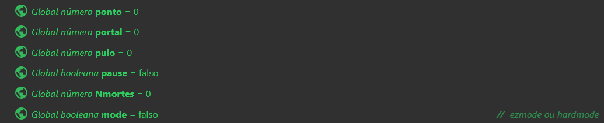

Código da tela de inicio

- Ao pressionar a seta para cima, a seta do menu vai para Y = 350.
- Ao pressionar a seta para baixo, a seta do menu vai para Y = 450.
- Se a seta estiver em Y = 350 e o jogador pressionar Enter:
- O objeto ezMode pisca por 1 segundo.
- O sistema define a variável
mode como Falso.
- O jogo avança para a Fase 1.
- Se a seta estiver em Y = 450 e o jogador pressionar Enter:
- O objeto hardMode pisca por 1 segundo.
- O sistema define a variável
mode como Verdadeiro.
- O jogo avança para a Fase 1.
👉 Assim, o jogador usa as setas para escolher a dificuldade (Fácil ou Difícil) e confirma com Enter. Após a escolha, o jogo inicia a Fase 1 com a dificuldade definida.
TESTE PARA VER SE TUDO ESTÁ FUNCIONANDO
Fase 1
Variáveis globais

!!CRIE AS VARIÁVEIS 😡!!
Programações iniciais

- Se o jogador está no chão:
- Define animação inicial e zera a variável pulo.
- Desativa o efeito de partículas.
- Ao pressionar Barra de espaço:
- Simula o pulo e altera a animação do jogador.
- Ativa partículas de spray com taxa e ângulo definidos.
- Reproduz o som de pulo.
- Se o jogador tiver velocidade X < 0 ou sair do layout:
- Executa animação de gameover.
- Pausa o tempo do jogador.
- Aguarda 2 segundos e recarrega o jogo salvo.
👉 Assim, o jogador pode pular com espaço, ver efeitos visuais/sonoros e, caso morra, o jogo mostra o gameover e recarrega o save.
Sistema


- Ao iniciar o layout:
- Define cores de objetos e para animações.
- Salva o jogo no local "mysave".
- A cada tick:
- Atualiza partículas na posição do jogador.
- Mostra na tela os valores de Pontos e Mortes.
- Ao completar carregamento:
- Reposiciona contador de mortes no jogador.
- Adiciona +1 morte e salva no "mysave".
- Definição pause:
- Pausa o tempo do jogo.
- Exibe a camada "Pause" e pausa a música.
- Senão (quando retoma o jogo):
- Continua a música.
- Oculta a camada "Pause" e retoma o tempo.
- Definição mode:
- Remove o objeto saveFlag.
👉 Assim, o sistema gerencia salvar/carregar dados, exibir pontuação e mortes, além de controlar pausa e retomada do jogo.
Música

- Ao iniciar o layout, se a música não estiver tocando:
- Toca a música em loop (tag "music").
- Ao completar o carregamento, se a música não estiver tocando:
- Toca a música em loop (tag "music").
👉 Assim, a música de fundo começa a tocar automaticamente no início ou após o carregamento, garantindo que nunca fique em silêncio.
Teclado

- Ao pressionar a tecla R:
- Ao pressionar a tecla Esc:
- Alterna entre pausar e retomar o jogo.
👉 Assim, o jogador pode reiniciar a fase rapidamente ou usar o Esc para pausar/continuar a partida.
Obstáculos


- Ao colidir o player com obstáculos (espinho, espinhoCai ou bola com correntes):
- Ativa animação gameover, desabilita física e projétil, e após 2s carrega mysave.
- Ao colidir o player com luzcoleta:
- Executa animação de coleta e adiciona +1 ponto.
- Ao terminar a animação coleta:
- Quando espinhoCai ou chãoQueCai estão na tela:
- Após 1.2s, ativam Física e se tornam objetos que caem.
👉 Assim, o jogador perde ao tocar em armadilhas, ganha pontos ao coletar luzes e encara espinhos e plataformas que desabam.
Mecânicas


- O jogador colide com a saveFlag (bandeira de salvamento).
- A saveFlag executa a animação de "save" (salvamento).
- O sistema salva o jogo no local "mysave".
- A saveFlag retorna para a animação de "idle" (repouso).
- O jogador colide com o portalFinal.
- O sistema verifica se a variável portalFase é igual a 0.
- O portalFinal executa a animação de "abrindo" (abertura).
- Após terminar a animação, o portal muda para "idle" (repouso).
- O sistema transiciona para a Fase 2.
- Quando o jogador sofre uma explosão/morte:
- O sistema ajusta a dificuldade de tempo.
- O jogador executa a animação "Default".
- O jogador é destruído.
- O sistema aguarda 0.6 segundos.
- Um novo jogador é gerado na camada 1.
👉 Assim, o jogo permite que o jogador salve seu progresso ao tocar na bandeira, avance de fase ao entrar no portal final (se cumprir as condições) e tenha um sistema de respawn após morrer, criando um ciclo de jogabilidade contínuo.
🎮 O controle é feito através de variáveis globais como portalFase que determinam quando os portais estão ativos e permitem o progresso do jogador entre as fases do jogo.
TESTE PARA VER SE TUDO ESTÁ FUNCIONANDO
Fase 2
Incluir a programação da fase 1 na fase 2

👉 Assim, a Fase 2 herda todas as funcionalidades e mecânicas da Fase 1, garantindo consistência na jogabilidade e evitando a necessidade de reprogramar tudo do zero.
👉 Para incluir a página você deve clicar com o botão direito na tela de programação e ir na opção "Incluir folha de eventos".
Sistema

- O sistema define a cor do mapa para um tom de amarelo escuro (RGB 50, 50, 0).
- O objeto jump recebe uma cor amarela mais clara (RGB 75, 75, 0).
- A saveFlag (bandeira de salvamento) é colorida com azul (RGB 0, 0, 100).
- Os pontos são definidos com um tom amarelo-esverdeado (RGB 90, 90, 10).
- O objeto luzcol recebe uma cor verde (RGB 0, 120, 0).
- O chão é colorido com o mesmo tom de amarelo do jump (RGB 75, 75, 0).
- As partículas também usam a mesma cor amarela (RGB 75, 75, 0).
- Ao interagir com o portal, a variável portalFase é incrementada em 1.
🎨 Este código configura o esquema de cores visual do jogo, atribuindo cores específicas a diferentes elementos como mapa, obstáculos, itens coletáveis e mecanismos de interação.
🔄 A variável portalFase é incrementada quando o jogador interage com o portal, possivelmente controlando o progresso entre fases ou o estado de abertura do portal.
- O sistema executa ações a cada 4 segundos e também ao iniciar o layout.
- São gerados dois objetos do tipo laser e laser2 na camada 1.
- Os lasers são criados no ponto de imagem 1, sem criar hierarquia.
- O sistema aguarda 2 segundos (usando escala de tempo real).
- Após esse tempo, os objetos laser são destruídos.
🔁 Este código cria um ciclo de geração e destruição de lasers a cada 4 segundos, provavelmente representando obstáculos periódicos ou armadilhas no jogo.
⚡ Os lasers são temporários, permanecendo ativos por apenas 2 segundos antes de serem removidos, criando um padrão de desafio intermitente para o jogador.
Mecânicas

- O jogador colide com laser ou laser2 → carrega o save.
- Quando o jogador não está no chão e pressiona C → define a variável pulo para 1 (permitindo pular) e adiciona as forças para o player.
- O jogador colide com speedUp → aumenta a velocidade do projétil para 600.
- O jogador colide com speedDown → diminui a velocidade do projétil para 270.
- O jogador colide com plataforma → aguarda 0.3 segundos e define a física como móvel.
- O jogador colide com portalfinal → Vai para tela final.
🎯 Este código controla as mecânicas principais do jogador na Fase 2, incluindo sistema de pulo, colisões com obstáculos (lasers), coleta de power-ups (speedUp/speedDown), interação com plataformas e conclusão do nível através do portal final.
⚡ Os itens speedUp e speedDown alteram a velocidade de projéteis, adicionando elementos estratégicos à jogabilidade. O sistema de Dash é controlado por uma variável que só permite pular quando o personagem não está no chão.
Agora só resta testar e competir com os colegas para ver quem consegue terminar o jogo com menos mortes.